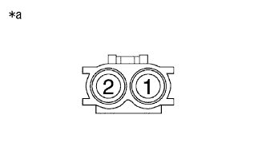

DTC P0335/13 Crank angle sensor system |
DTC P0339/13 Crank angle sensor NE instantaneous |
| DTC No. SAE/TCCS | DTC detection conditions
| Inspection site |
|---|---|---|
| P0335/13 |
|
|
| P0335/13 |
|
|
| P0339/13 |
|
|
| Step 1 | Tascan data reading (engine speed) |
Connect SST (Tascan) to DLC3.
Ig ON.
Follow the SST (Tascan) screen display, and select [ECU Data Monitor]-[Engine speed].
Start the engine.
Read the value of the engine speed during the engine.
| result | Destination |
|---|---|
| Abnormality | A |
| normal | B |
|
| ||||
| A | |
| Step 2 | Crank position sensor single inspection |
Cut the connector B2 of the crank position sensor.
|  |
Use SST (Toyota Electrical Tester) to measure resistance between terminals.
| Inspection terminal | Inspection condition | Reference value |
|---|---|---|
| 1-2 | -10 to 50 ° C C | 985 to 1600 Ω |
| 1-2 | 50 to 100 ° C | 1265 to 1890 ω |
| *a | Connector non -connection status (Crank position sensor) |
|
| ||||
| OK | |
| Step 3 | Wire harness and connector inspection (engine control computer -crank position sensor) |
reference.Cut the connector B36 of the engine control computer.
Cut the connector B2 of the crank position sensor.
Use SST (Toyota Electrical Tester) to measure resistance between terminals.(The terminal array isreference)
| Inspection terminal | Inspection condition | Reference value |
|---|---|---|
| B36-27 (NE+) --B2-1 (NE) | Always | Less than 1 Ω |
| B36-34 (NE-) --B2-2 (NE-) | Always | Less than 1 Ω |
| Inspection terminal | Inspection condition | Reference value |
|---|---|---|
| B36-27 (NE+) and B2-1 (NE) -The between other terminals and body earth | Always | 10 kΩ or higher |
| B36-34 (NE-) and B2-2 (NE-) -Thears between other terminals and body earth | Always | 10 kΩ or higher |
|
| ||||
| OK | |
| Step 4 | Sensor mounting unit inspection |
Check the bolt of the crank position sensor.
|
| ||||
| OK | |
| Step 5 | Crankshaft single inspection (crank angle sensor) |
Inspect the uneven and mounting status of the crankshaft crank angle sensor.
|
| ||||
| OK | ||
| ||